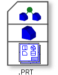
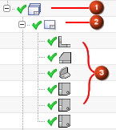

图纸文件
NX 图纸的存储类型与部件以及装配的存储类型一样，扩展名都是.prt，NX 文件中可以包含装配组件、部件几何体以及图纸。

您可以在与部件或装配相同的文件中存储图纸(1)，也可以在单独的文件中存储(2)，但大多数情况下，更倾向于将图纸保存在独立的文件中。

要在单独的文件中创建图纸，在新建对话框中选择引用现有部件选项。
图纸是一个概念上与装配组件类似的文件，图纸文件中包含一个组件，该组件又引用包含部件或装配的文件。
部件导航器中的图纸
部件导航器中显示图纸(1)、图纸中的图纸页(2)以及各个图纸页中的视图(3)。

绿色钩号表示图纸页以及视图是最新的。